FSKY Dev-tools Manual.
Thank you for purchasing the FSKY developer tool suite! This page will help you to understand the basics of both Gris and SourceBox.
So, welcome to the Gris Editor. It's this cool 3D scene editor we created during our brief partnership with Valve Software. It all started with messing around with the Source engine's entity system and how AI acts. We kinda stole some ideas from Hammer's level design style, but we tossed in our own stuff for making dynamic scenes and see how things interact. Gris (which is short for Geometric Rudimentory Interactive Sculptor, by the way) lets you create simple 3D spaces, fill them with ai entities, and run simulations in this controlled, empty area – think of it like those abstract test chambers.
Now, unlike the full-on Source tools like Hammer, Gris is this standalone editor that's all about quickly testing out AI and how objects interact. It runs straight on the Source engine, using MDL models for assets, BSP-style shapes for the solid stuff, and GRIS Shape based easy entity creation. Models load up in Valve's .MDL format (it can read simpler versions too, to be fair), and textures/materials use VMT/VTF pairs. The editor puts a lot of focus on giving entities their own personality with tweakable AI states, sounds, and physics shapes, so you can get some cool behaviors like chasing, wandering around, and capture stuff. As well as more complex stuff!
This page is gonna give you a detailed guide to using Gris. We're gonna assume you know some Source basics (like what entities, keyvalues, and outputs are). If you're new to Source modding, check out Valve's developer wiki to get the lowdown. Heads up: Gris is kinda old, so expect some quirks! We are currently working on much smoother environment like Boxrocket (DMEditor)
Here's what you'll need to run it:
- Windows XP
- Direct3D version 6.1
- Source engine runtime (it's in the disk image package).
- Sound support for WAV/MP3/OGG entity sounds.
Let's Get Started!
| GRIS |
 |
| Format | .DME / .MDL / .OBJ |
|---|
| Status | Legacy |
|---|
Installing and Firing It Up.
To get this thing installed and running, you gotta play around with those disk image formats. Back in the day, this software came on CDs, so we're doing it the old-school way. This gets the tool working with the Source engine, so you'll need to mount and compile ISO files, then register with the SourceBox utility. Follow these steps closely to get it right:
- Extract the Disk Images: You'll have CD_GRIS.iso (that's got the Gris Editor) and CD_SRCBOX.iso (with SourceBox, version 0.3.2.1999). Later versions might have install wizards, but not these.
- Mount the ISOs: Use something like Daemon Tools (or any CD-ROM emulator) to mount both CD_GRIS.iso and CD_SRCBOX.iso at the same time. If you're compiling, make sure they're mounted as one virtual drive.
- Start the Install: Once they're mounted, run the installer from that combined mount point. Pick your target Game folder (usually the bin folder next to Hammer.exe in your Source SDK install, like
C:\Program Files\Valve\SourceSDK\bin). The installer will extract files and make these folders: GRIS for the editor stuff and SourceBox V0.3.2.1999.
- Fire Up SourceBox for Setup: Go to the SourceBox V0.3.2.1999 folder and run
SourceBox.exe. This makes some config files that are needed, like runtime libraries, connecting to our server host, and creating currently active .DME from server side, might take a minute and low down your volume please, as process may include loud unpleasant sounds.
- Register the CDKEY: In SourceBox, press the cone button to switch to tracker and establish connection, hit the tilde key ~ to open the console and type
cdkey_reg to start registering. Enter the CDKEY you got when you bought it, using a valid input device. Or, use ord_gen to generate an input field for inputing the key manually.
- Validate and Restart: After you enter a valid key, SourceBox will do its thing and unlock everything. Restart
SourceBox.exe to connect to the server.
- Launch Gris: Only after SourceBox is registered and restarted, go to the GRIS folder and run
gris.exe. The first time you run it, it'll load an empty scene with a grid floor, some lights, and a local container for playing with entities. If you have problems, double-check that the dev suite installed right, the CDKEY is registered, and you have a working internet connection.
Basic Navigation.
- Camera: Use WASD to move around (forward/back/left/right), Q for up, E for down. Right-click and drag the mouse to look around.
- Observer Mode: Hit F5 or the OBSERVER button in the Toolbox to see a top-down view, which is handy for checking out the whole scene.
- Grid and Bounds: Scenes are in a local area with bounds[-50..50] on X/Z axis.
Loading/Saving Scenes.
- File Format: GRIS saves scenes as
.DME (Dynamic Map Entity) files. This keeps all the entity settings, positions, and AI stuff.
- Open/Save: Use File > Open/Save to open or save your DME files. The file browser shows folders with[DIR] in front and only shows .DME files. The Up button takes you to higher-level folders.
- Auto-Save: Pro tip: save every 5 minutes. GRIS doesn't autosave, and you don't wanna lose your work if something crashes (it's rare, but Source can overflow sometimes).
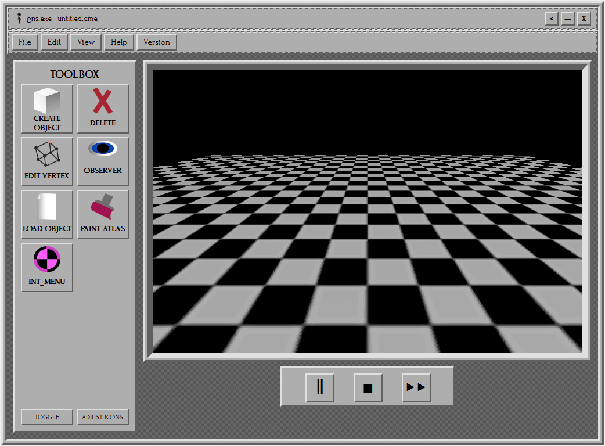 |
| GRIS Editor Interface Overview |
Interface Walkthrough.
Toolbar (Top):
- File menu: New, Open, Save, Exit. Pretty self-explanatory.
- Edit: Undo/Redo (for scene or drawing changes), Copy/Paste selected entities.
- View: Toggle fullscreen or show/hide the toolbox.
Toolbar (Left):
- Create Object: Makes a GRIS shaped object or model that you can turn into an entity by giving it AI.
- Paint Atlas: Lets you color objects with simple colors using the FILL function and lets you pick any standard color. Pick HEX lets you use any custom color you want. Material Browser lets you slap any material from the
/materials/ folder onto objects. Outline is for drawing graffiti textures, but heads up, it's moved to DRAW in the latest versions. DRAW lets you draw your custom textures and simple graffiti.
- DELETE: Deletes any objects you don't want anymore. In the settings, you can use a dynamic REMOVER entity to gracefully delete your entities! Always fun!
- OBSERVER: Shows you a top-down view of your stuff, useful if you're working with 2D stuff or just wanna see the scene from above.
- LOAD OBJECT: Imports objects or AI entities from saved scenes if you need them.
- EDIT VERTEX: Lets you mess with the vertices of objects or scale them up/down. You can't mess with the vertices of models, though, only scale them.
3D Viewport (Center):
Shows your scenes and entities in real time. You can set up a custom SKYBOX in the settings, but remember, this only affects your local editor, NOT the server side of the void.
Comment Bar (Bottom):
Shows status messages, like what mode you're in or what you're doing, like Edit Mode: Select entity to modify.
Transport Controls (Bottom-Right):
Handy buttons like pause, which stops AI from updating, and a 2x speed button for watching AI simulations faster. Stop resets entity positions.
Hotkeys:
- Ctrl+Z/Y: Undo/Redo.
- Del: Delete selected.
- Esc: Deselect/Cancel current mode.
- F1: Help (opens this manual).
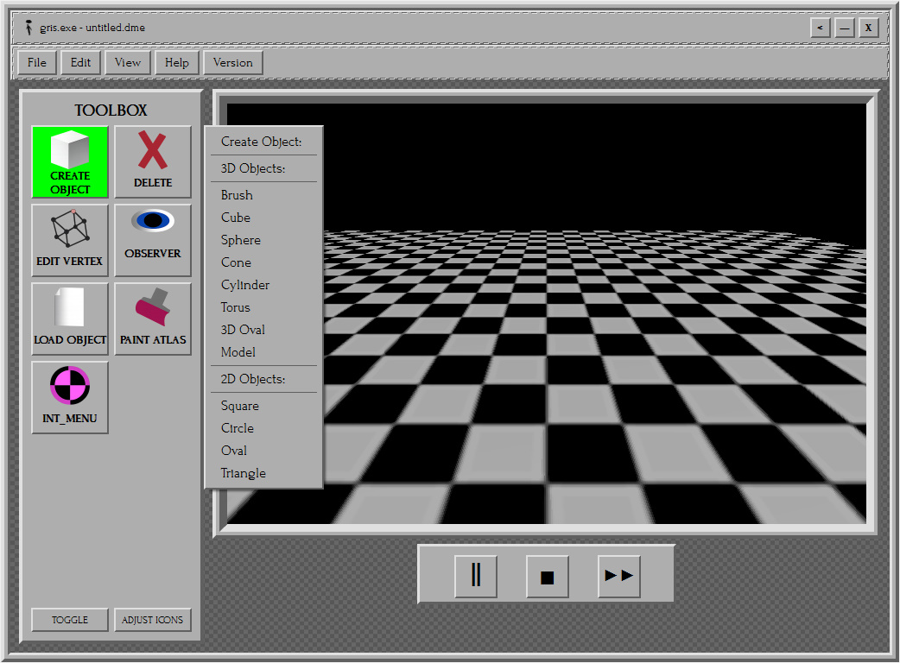 |
| Creating basic objects and brushes |
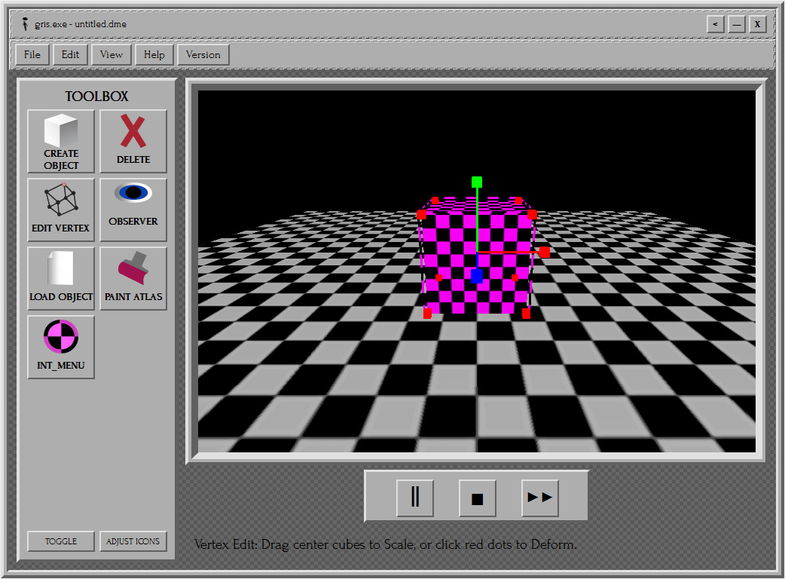 |
| Edit Vertex mode |
Making and Changing Objects
Gris handles three main entity types: Brushes (solid shapes), Models (MDL meshes, though, it can handle .OBJ formats, more on that later), and Gris Shapes. They all come from a base SceneObject class with settings for position, scale, rotation, color, and if they're solid.
Spawning Entities.
- Click the Create button on the toolbar to open the spawn menu.
- Options: Cube, Sphere, Cone, Cylinder, Model (loads .MDL / .OBJ files), Brush (solid wall/floor).
- When you spawn something: It appears where your camera is pointing on the ground (Y=0). It starts with a default scale[1,1,1] and a MISSING texture.
- Models: Load .MDL files through the file dialog. Gris reads the vertices, normals, texture coordinates, and material groups (from the MTL data). Textures load as VTF automatically if they're there.
Brushes
Solid entities used for collision. Coming from Gold Source days prototype, useful for testing AI collisions and pathfinding, and for making simple scenes. No self-collision, brushes can overlap, but solids block movement.
Default: Cube at [2,2,2] scale.
Selecting and Moving Stuff:
- Select: Left-click on an entity. Hold Shift to select multiple.
- Move: Drag the 3D gizmo with the left mouse button (X/Y/Z plane).
- Scale/Rotate: Use the gizmos (arrows for scale, arcs for rotating). Scale is limited to[0.1..10], rotation wraps around 360.
- Copy/Paste: Ctrl+C copies the settings of selected entities, Ctrl+V pastes them at an offset.
- Undo/Redo: Stores the entire scene state (list of entities). It goes back 30 steps.
- Grid Snap: You can turn it on in the Edit menu to snap positions to 0.5 units.
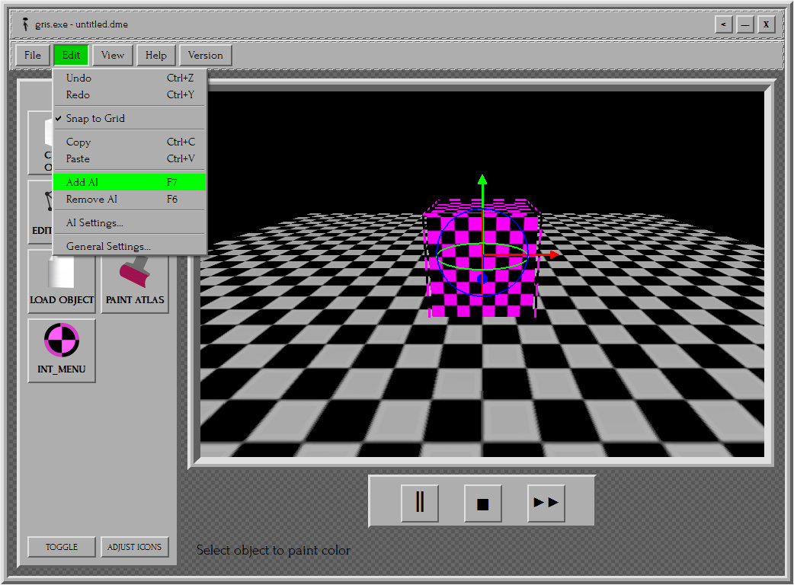 |
| Adding AI to basic objects |
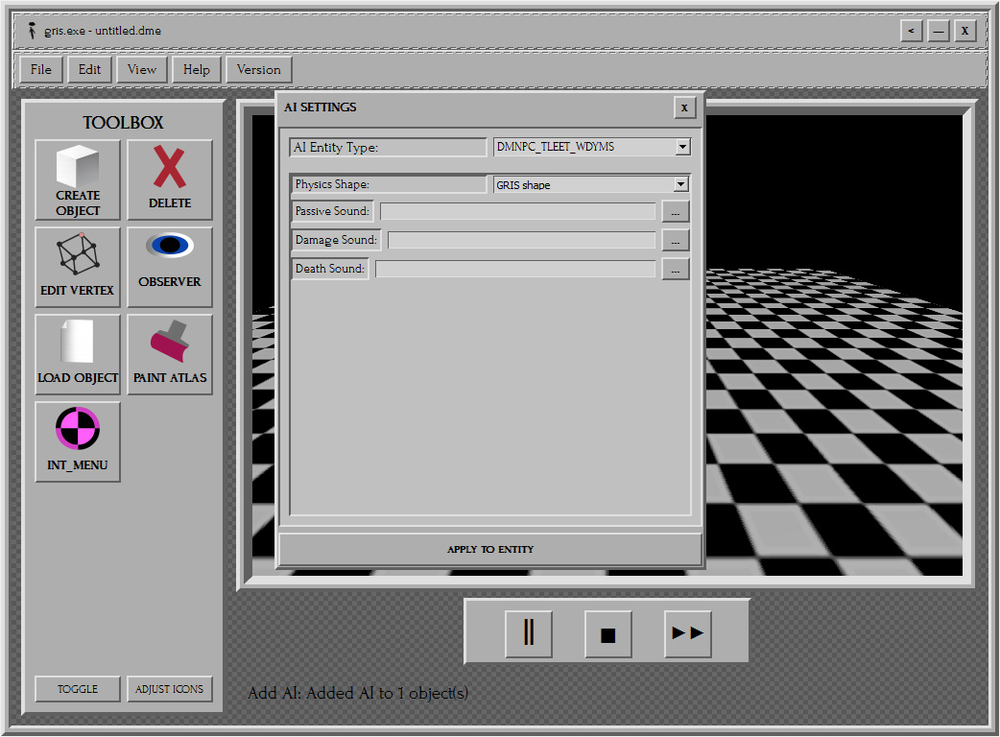 |
| AI Settings tab |
AI Entities.
This is where Gris shines: custom NPCs with their own behaviors. Entities get AI when you set has_ai=true and set an ai_type keyvalue. Simulations run in real time (per-frame updates), with a speed multiplier (1x/2x).
Turning On AI:
- Select an object, go to Edit, and click Add AI. Then select the entity again, go to Edit, and open AI Settings.
- Types: FSKY_CAPTURE_CBSGY (only exists to CAPTURE AI and remove them from the scene, think of it as smart scene manager), DMNPC_TLEET_WDYMS (Primitive dynamic NPC), Siuef (Advanced Dynamic).
- On apply: The entity gets an AI state machine, timer, speed (0.02-0.07 units/frame), and a config dictionary.
Common AI Stuff
- Update Loop: Every frame (if not paused), call
update_ai() with menu mode flags, bounds, and all entities.
- Movement: entities bend, squash and lerp to look more alive, and silly! Like cones! Everybody likes watching silly cones move, especially Jeremy! :D
- Collision: AABB check against solids.
- Sounds: Sounds play through Source's audio system (WAV/MP3/OGG) while server converts them automatically during uploads, but WAV is prefered, since your mp3 and ogg pile up in temp folders, and thats why we need often server reboots! To clean up this shit >:(
Pause/Reset: Transport controls stop updates or reset positions/states.
AI TYPES.
AI Type: FSKY_CAPTURE_CBSGY (AI CAPTURE Class)
WARNING! Do NOT send this entity to the server, it already exists and will cause problems!
- Behavior States: WANDER (random movement), CAPTURE (removes the target entity), HALT (freeze for a couple of frames to process the next move).
- Config Keyvalues:
fsky_ignore_col: Bool—ignores brush collision for direct paths.fsky_radius: Float (1-100)—detection range (default 15). Siuefs get -5 bias (easier target).
- Sounds: Passive cycle (
fsky_pass), Capture (fsky_cap), Notice 1/2 (fsky_not1/2).
- Diagnostics: Just shows current metal_reg_state states (AI LOGIC like PLAT, SETREG, etc.).
- Capture Logic: If targeted within radius, they switch to CAPTURE. On contact (<1 unit), they flatten the target (scale Y=0.1, color red), turn off its AI, and play a sound.
- (Warning! Source engine doesnt really support GRIS physics, especially when it comes to models, so during Captures rigid models can visualy distort.)
- Movement: Fly towards the target (including Y).
AI Type: DMNPC_TLEET_WDYMS (Primitive Dynamic NPC, or the Wanderer as we like to call it!)
- Behavior: Constant WANDER—new random target sometimes, avoids piling up in huge groups.
- Config Keyvalues:
dmnpc_phys: GRIS shape (simple box) or Model (full MDL hull).
- Sounds: Passive (
dmnpc_pass), Damage (dmnpc_dmg), Death (dmnpc_death).
- Animation: Squash/stretch (1 + sin(timer*0.2)*0.05), bend (sin*0.2). Yaw lerps to target.
- Movement: Ground-based (Y fixed), speed 0.03. Respects collision.
AI Type: Siuef (Advanced Dynamic NPC)
- Behavior: Fully dynamic, adapts to its environment and reacts to it and players. Can only be a cone as later they take control of rigid bodies with small user help.
- Config Keyvalues:
sil_speech: Bool—enable chat speech, they learn to chat based on player input, especially from the chat, so watch what you say! Its not our faults your npcs start swearing.sil_custom_col: Bool—a unique color pickersil_color: RGB float.
- Sounds: Passive (
sil_pass), Damage (sil_dmg), Death (sil_death).
- Interaction: Anything you teach them. Really, we arent joking here. And PLEASE treat them light heartly, its still AI, even tho a very smart one, it cannot replace someone from your real life, its only used for cool scenes, or nice gameplay.
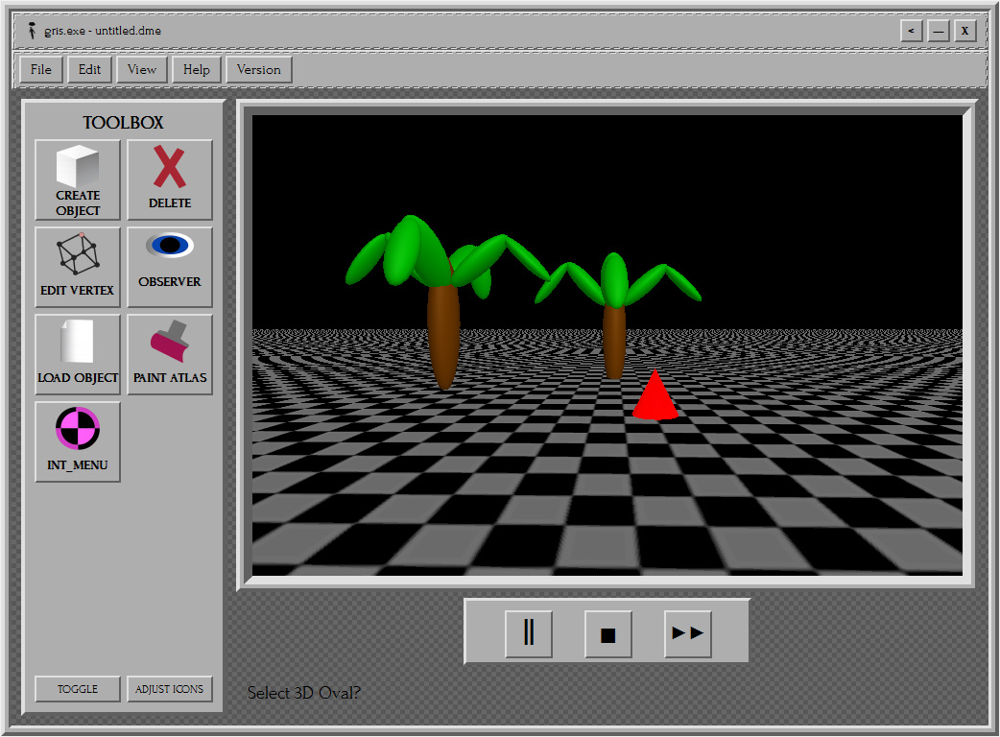 |
| Scene submitted to INT_MENU |
INT_MENU Mode
Simulations run locally until you send them to INT_MENU. Once you're done building your scene or AI, upload them to our server host using following commands inside SourceBox typein - "network-push", followed by "ord_ren" to ping your container. SourceBox will automatically sync with local INT_MENU instance, detecting newly submitted scenes and objects. Make sure your connection is good before trying to push network updates. Networking issues during merges makes James VERY angry, and he WILL come to your desk and slap you with a fish.
Then, you have to validate your development kit CDKEY using "cdkey_check" command, after authenticating key scene will be submitted to our server host. Please remember not to misuse the Ordinance system, so that everyone can have fun! After you uploaded the scene, you can switch back to Editor mode, and save your files. For local hosts, you can try using SourceBox local DME host feature, more about that in SourceBox manual page.
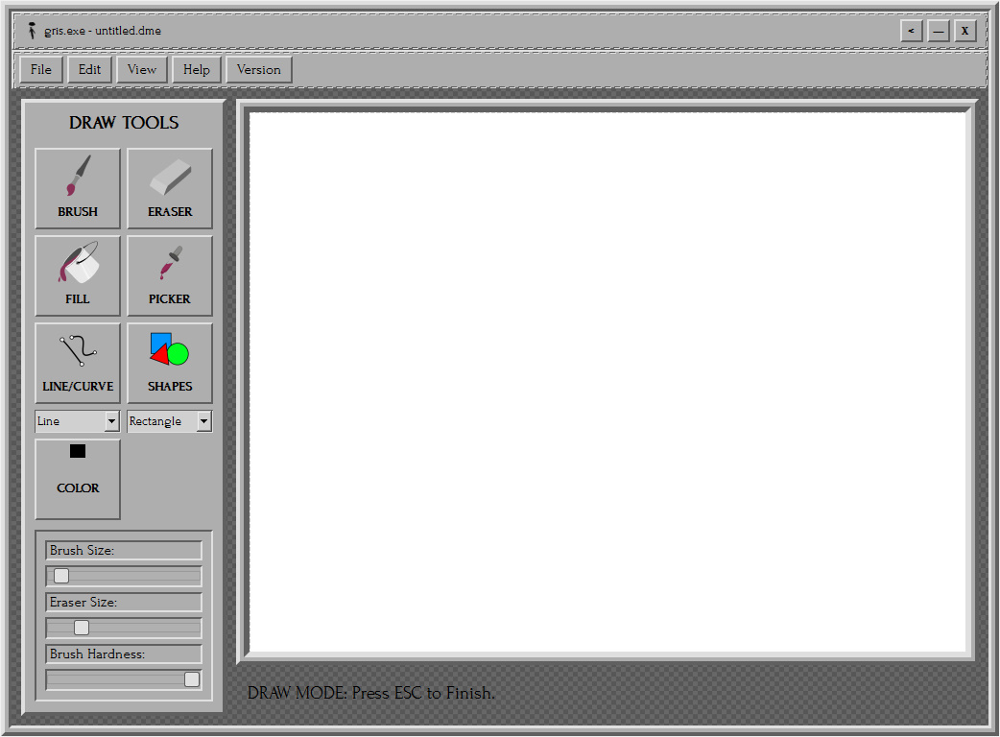 |
| Draw Mode |
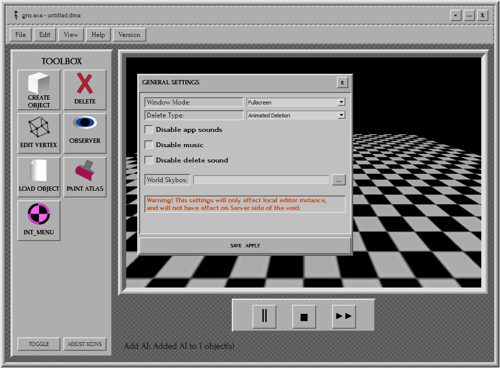 |
| General Settings |
Drawing Mode
Click the Draw button to toggle it—opens a 2D canvas (1024x768) for making and changing textures. Uses Source's 2D render target with antialiasing.
Tools
- Brush/Eraser: Soft line drawing (width 5/20, hardness 100). Alpha blends for smoothness.
- Fill: Flood fill (queue-based, respects alpha).
- Picker: Samples color.
- Shapes: Rectangle/Ellipse/Line. Shows a preview while dragging.
- Line/Curve: Single line or quadratic bezier (3 clicks: P1, P2, control).
Controls
- Mouse: Draw/drag. Right-click pan. Wheel zoom (0.1-5x).
- Undo/Redo: Image states (30 deep).
- Reset: Clear to white/transparent.
- Save: Export as VTF (through a dialog). Apply to the selected entity's material. Note, textures also can be exported as PNG/JPG/BMP they CAN be used inside gris with special flags such as:
- "_alpha" and "_cutout" prefixes to make them use transperancy for grates, fences etc.
- "_trans" "_glass" helps with drawing glass effects.
Same trick also works for models textures. Gris also supports obj format. NOTE, these models cannot be uploaded to server side, such as textures. But you can use them localy in Gris.
Settings
General Settings Tab
- Window: Windowed/Fullscreen.
- Delete: Fast/Animated Remover.
- Sounds: Disable sounds/music/delete.
- Skybox: Pick VTF/PNG/JPG/BMP for the world cubemap (Source skybox shader).
AI Settings Tab: Per-entity, as above.
SourceBox
| SourceBox |
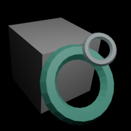 |
| Version | v0.3.2.1999 |
|---|
| Role | Tracker / Render |
|---|
In this part we will discuss SourceBox and its features! This tool is used to - for entity tracking and server synchronization within the Source engine framework, created out nessecity for secure key validation and data pushes in dynamic environments. Its multifunctional utility.
Here is a full list of what SourceBox is - a console-driven initializer, entity tracker, local host, and even scene renderer utilizing what we call the Ordinance system. Try saying that ten times faster! :D
Basic Navigation
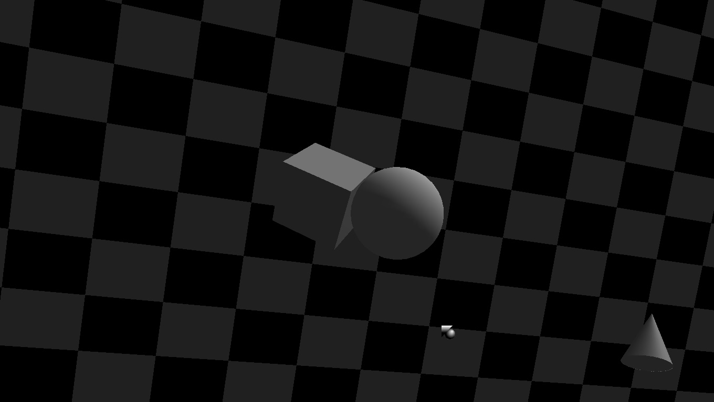 |
| SourceBox menu screen |
Using SourceBox is pretty simple, as it only has three buttons you will need to memorize at most - Cube, Sphere and cone. Cube is used to spawn FSKY Capture Cube in active Source game, Sphere is used for - Ordinance System to render specific scene captured via cube from the spray decals. And cone, used to establish connection, and track the position of entities from active DME file on server host.
In tracker mode you see location code, usualy defined with few letters and numbers, active DME file name, entity coordinates, and METAL_REG logic. Console Access: Press the tilde key "~" to toggle the console. All operations are command-driven.
- Command Input: Type commands directly into the console prompt (prefixed with "]"). Use Up/Down arrows to cycle through command history.
- Status Bar: The bottom of the interface displays connection status, latency, and handshake results.
- Type in "help" for available commands!
Loading/Saving Scenes
- File Format: SourceBox handles .DME files indirectly through synchronization commands. It does not directly edit scenes but pushes/pulls them to/from the server.
- Sync Operations: Use console commands like "network-push" to upload local .DME changes, or "get s.interlope.pull:27015" to request data pulls from the server.
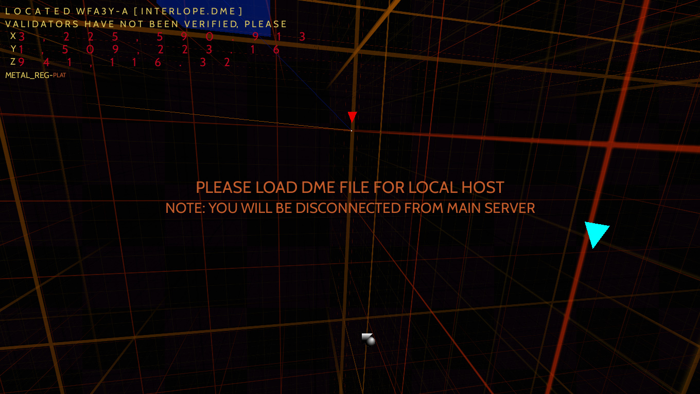 |
| Loading DME notification |
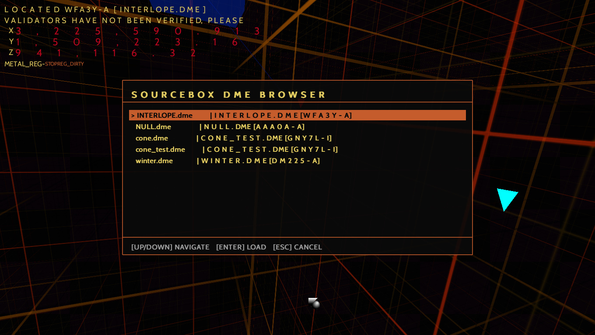 |
| DME browser menu |
WARNING! DO NOT USE this command (get s.interlope.pull:27015)!
It is only a debugging feature, that exists soully for developers, it requests data .dem files used for our AI trainning for inspections from our FTP server. Use of such commands considered datamining, and will result in getting flagged by our security system, termination all instance of our software, and even result in some of your games being temporary disabled. Followed by Immediate license key terminations. You were informed and by purchasing signed an agreemnts to such terms.
- Auto-Sync: SourceBox automatically syncs with the local INT_MENU instance upon detecting new submissions from Gris. Manual saves are not required, but use "cdkey_check" to validate before major pushes.
- Console displays logs in color-coded text: default (yellow), error (red), success (green), info (blue), input (white), title (gray), sys (light gray).
- Logs: Up to 14 recent entries are shown, scrolling automatically. Use "clear" to reset.
- Input Prompt: Starts with "] " and includes a blinking cursor for command entry.
Hotkeys:
- ~: Toggle console.
- Enter: Execute command.
- Backspace: Edit input.
- Esc: Close console (if no input active).
Using the Console
SourceBox's core functionality revolves around console commands for authentication, networking, and tracking. Commands are case-insensitive and executed via Enter.
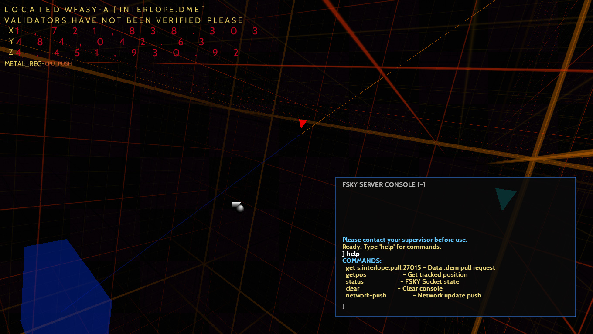 |
| SourceBox Console |
Available Commands:
- help: Displays a list of available commands, including "get s.interlope.pull:27015" for data pulls, "getpos" for tracked positions, "status" for socket state, "clear" to reset console, "network-push" for updates.
- clear: Clears all console logs.
- status: Shows detailed FSKY socket status, including host, port, state, latency, and handshake.
- network-push: Enters administrative mode for pushing updates. Follow with "ord_ren" to ping your container. Warns about stable connections to avoid issues that anger James (he WILL slap you with a fish).
- ord_ren: Initiates a heartbeat ping to the container after "network-push". Validates connection and prepares for sync.
- cdkey_check: Validates your development kit CDKEY before submissions. Required after "ord_ren" for final authentication.
- get s.interlope.pull:27015: Requests a data .dem pull from the server. Saves to Steam/steamapps/common/HL2/bin/SourceBox V0.3.2.1999/render/sessions/. Automatically handles disconnections.
- getpos: Retrieves the current tracked position of the Interloper entity from INTERLOPE.DME.
- cdkey_reg: Starts the CDKEY registration process (used during initial setup).
- ord_gen: Generates a temporary secure input field for manual CDKEY entry.
For more commands visit our website or ask devs on forum, they will gladly reply.
Tracker Functionality
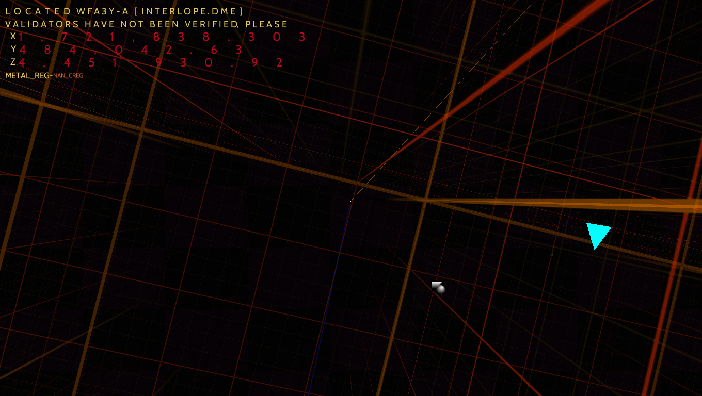 |
| SourceBox Tracker Mode |
SourceBox's Tracker is a built-in monitor that runs in the background, tracking the active DME file on server (INTERLOPE.DME) file specifically monitors the FSKY_CAPTURE_CBSGY entity class, that handles AI managment, logging its position, state changes, and capture events in real-time.
The scene mostly displays the void, but to make it visualy more interesting, rather then forcing you or our developers to stare at blank space, we divided it into sectors, creating this Tron alike environment that can be quite cool to observe! Map Skybox are represented by the blue cubes you can see in void near tracked entity, it always appears near them, represented by the red Tracked cone above it, and connected via two lines - orange stretching from its origin point from submitted INT_MENU instance, and blue one - targeted location it observes/handles.
You can also see the active AI cones in distance as they ocasinally travel through the void, or get submitted to server side, traveling to their respected positions or POI - point of interest.
SourceBox uses a variety of audio tones to signal its operations, it is pretty normal to hear some "beeps" and "boops" durings its operations aside from music. It signals logic firing, checks, etc, but what you really have to look out for is following list of sounds:
- Friend_Join: - while it is used to signal injection or host connection, if you hear it second time during active session: it means someone connected directly TO YOU, and can steal your data. While we do care for our users safety, and try to do anything in our power to avoid such cases, we cannot guarantee 100% safety. IF this incident occured, terminate you active session by shutting down the SourceBox, and inform our server supervisors at www.fskyhostings/safety.no. We will check the logs, help you to change the registry key, and ban users responsible.
- Message: - Usualy used to signal any errors, always check your console.
- WARNINGBELL: - this sound signals a System alert, please inspect console output immediately, check your wifi connection. Verify game runtime. And METAL_REG state, or DME integrity to prevent crashes.
If you see one of following issues:
1. Console contains any errors error messages.
2. Wifi connection is bad/or down.
3. METAL_REG displays HALTED state.
4. DME integrity check returns fail.
5. Game is unresponsive.
It means - you are actively crashing, and immediate actions are required. Please try disconnecting from server host, do not force app closure without disconnecting from the host, close SourceBox and Gris, and only then close your game. Failing to safely disconnect can cause local runtime anomalies or entities unprodictable behaviours. Notify if you expirienced this issue.
Please note that if you experiencing a "#SBERROR_CDGRISNOTFOUND" during initial launch, this signals that you failed to correctly mount and compile the disk image.
Tracker keybinds:
- R - Changes current tracked entity to other one.
- Y - Focuses on current tracked entity.
- F - Set to window/fullscreen mode.
- M - Mute the music.
- ~ - Open the console.
- N - Disconnect from server and switch to local DME host. Followed by opening local .DME files browser. Note: Absence of valid Validators may cause instability. Validators authenticate scene data and authorize manipulations of DMNPC logic.
- C - Fast Gris Launch.
ORD_CAPTURE
Also known Ordinance system, its a specialized rendering utility integrated into SourceBox for capturing and rendering scenes from server by memory! It enables the extraction of preserved gameplay scene from recorded player sessions (from demo) used to train advanced AI entities like Siuef types. Or from saved scenes! These represent captured demos and environmental states stored on our host server, allowing developers and players to pull, render, and interact with their scenes without direct engine modifications.
To access Ordinance system, simple press the sphere button in menu.
NOTE: Sometimes SourceBox can be a bit glitchy and has quirks by being un able to find a valid Graphics driver due to its age, if thats the case, Press N, to force it re-scan available drivers and validate them. Then, by pressing R - capturing active engine processes (to read sprays or entity placements), then press R again to start rendering!
Here is full instructions how to do it properly:
- Prepare the Scene: In a Source engine game - apply a spray decal on a wall of scene you wish to render (e.g., before the player's view or an open skybox area).
- Spawn FSKY Cube entity: Introduce a cube entity (via SourceBox menu button) put it directly in water.
- Open Sphere menu: Navigate to the sphere rendering submenu in SourceBox
- Validate Drivers: Execute driver validation and capture the instance of active engine process (e.g., HL2.EXE or equivalent). This step captures the spray.
- Initiate Capture: Trigger the capture command to pull the scene data from the server.
- Render Interactive Scene: Once captured, ordinance render generates an interactive void instance. The process renders the saved environment, including players interactions and AI behaviors. Users can explore, modify within this rendered space.
Importance of Responsible Use
The Ordinance system must not be misused, as emphasized in our guidelines. Unauthorized alterations—such as killing DMNPC entities or disrupting void structures—can permanently ruin preserved scenes. These memories, stored on the host server without comprehensive backups, represent irreplaceable player experiences and AI training data. Interfering risks corrupting the void's stability, preventing others from enjoying or building upon these shared environments. We urge all users to handle ordinance renders with care, ensuring everyone can preserve and have fun with their creations.
In case if said system is misused, system will flag you and terminate all your game instances as well SourceBox, followed by immediate license key terminations.
MAKE FACE (to be removed)
| MakeFace |
| Format | .VTF to .MDL |
|---|
| Icon | Lost |
|---|
| Status | Deprecated |
|---|
Notice: This page is to be removed.
MakeFace is one of the earlies FSKY tools, that handles models generation from Valve Texture Format files. It doesnt has native interface and can only be launched via command console, by navigating to MakeFace.exe, and then launching it by following command:
C:\> cd C:\Program Files\Valve\SourceSDK\bin\MAKEFACE
C:\Program Files\Valve\SourceSDK\bin\MAKEFACE> makeface.exe -src "C:\Valve\SourceSDK\bin\materials\models\research\YOURFILENAME.VTF" -res 256 -out "C:\Valve\SourceSDK\models\MakeFace\YOURFILENAME.MDL" -v -nodes 1024
Wich will launch Face or model generation immediately, this process may take a while, but in the end it will output generated model base on your texture. We dont really recommend you to use this method, as meshes can appear heavily broken or even un-optimized.
You can however try generating an SMD file of your model, that you can optimize using side editors with SMD support pluggins. For this, use following command:
C:\> cd C:\Program Files\Valve\SourceSDK\bin\MAKEFACE
C:\Program Files\Valve\SourceSDK\bin\MAKEFACE> makeface.exe -src "C:\Valve\SourceSDK\bin\materials\models\research\YOURFILENAME.VTF" -res 256 -out "C:\Valve\SourceSDK\models\MakeFace\YOURFILENAME.SMD" -v -nodes 1024
Do note that some of the models may look unsettling due to both softwares age and unreliability. Therefore, newer versions will no longer include this tool in dev suite. Use at your own risk. Please ensure that no human face imagery was used without their consent.
That covers all current avalible tools. Once again thank you for purshaching this development tool suite! See you at the Server!
Got questions? Visit www.fskydev/forums.no. See you on the servers! Thanks again for your purchase – FSKY.
|